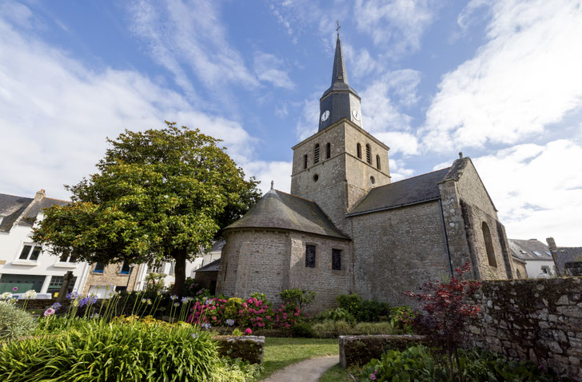
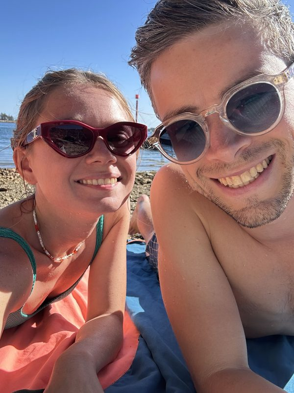
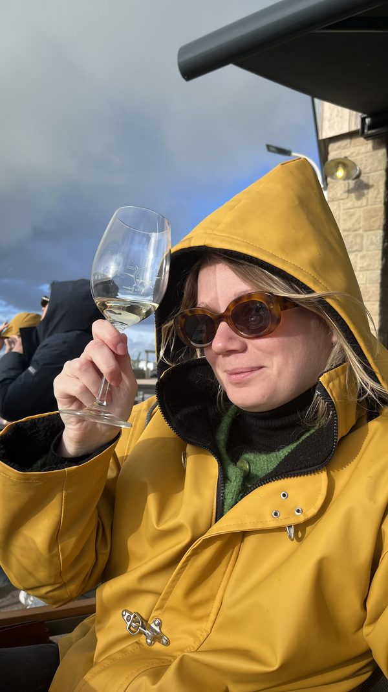
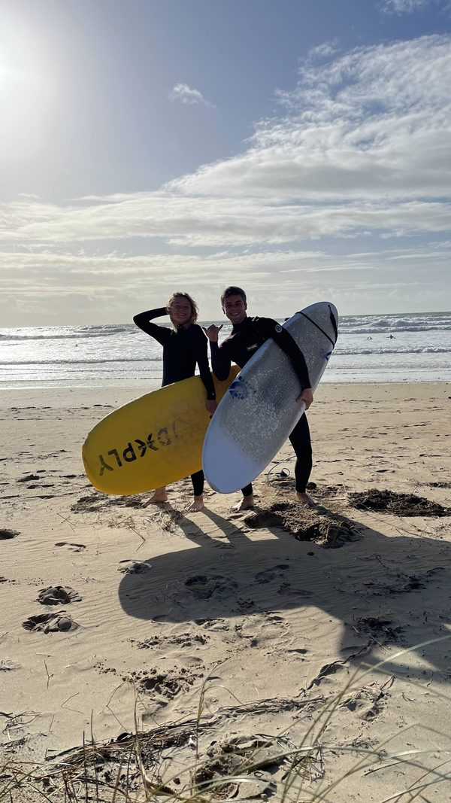
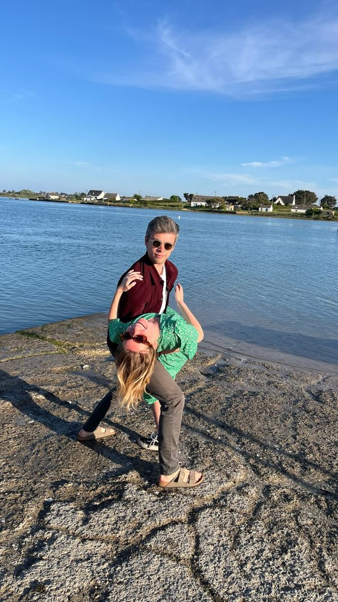

La cérémonie
Samedi · 14h30 (à confirmer)
Église de Locmariaquer
Nous nous marions !
Samedi 26 juin 2027
Golfe du Morbihan · Bretagne

Nous sommes heureux de vous inviter à célébrer notre mariage au cœur du Golfe du Morbihan. Vous trouverez sur ce site toutes les informations pratiques pour profiter pleinement de ce week-end avec nous.
Samedi · 14h30 (à confirmer)
Église de Locmariaquer
Samedi · à partir de 17h
Manoir de Kerat, Arradon
Dimanche · 11h (à confirmer)
Maison Jegat, pointe d'Arradon
Une réponse par foyer suffit.
Église de Locmariaquer.
Au Manoir de Kerat, à Arradon.
Au Manoir de Kerat.
Jusqu'au bout de la nuit…
Maison Jegat, pointe d'Arradon.

Cérémonie religieuse · 14h30 (à confirmer)
Place de l'Église, 56740 Locmariaquer

Réception · à partir de 17h
5 Impasse de Kerat, 56610 Arradon
Brunch du dimanche · 11h (à confirmer)
Pointe d'Arradon, 56610 Arradon

Fin juin, c'est la haute saison dans le Golfe du Morbihan : nous vous conseillons de réserver votre hébergement le plus tôt possible.
Sur place, à deux pas du Manoir de Kerat et de la Maison Jegat : idéal pour profiter de la soirée et du brunch sans prendre la route.
Chercher aussi sur : Booking Airbnb Gîtes de France
À 10 minutes d'Arradon : le plus grand choix d'hôtels, une gare TGV et une jolie vieille ville.
Entre l'église et le manoir, au bord du Golfe. Chambres d'hôtes et gîtes de charme.
Près de l'église : Locmariaquer pour la mer, Auray et le port de Saint-Goustan pour le charme.
Booking Airbnb Gîtes de France Locmariaquer Gîtes de France Auray




Votre présence à nos côtés est notre plus beau cadeau.
Pour ceux qui le souhaitent, une liste de mariage sera bientôt disponible.


